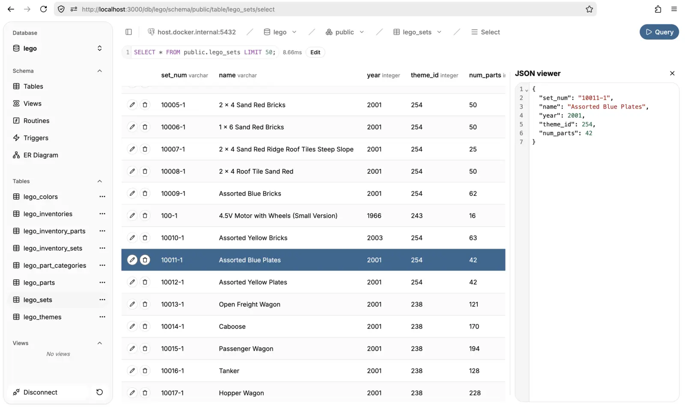
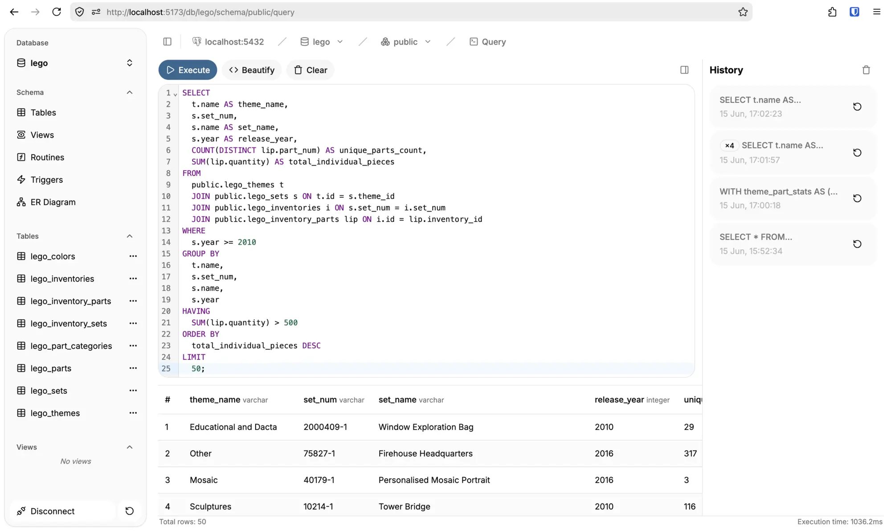
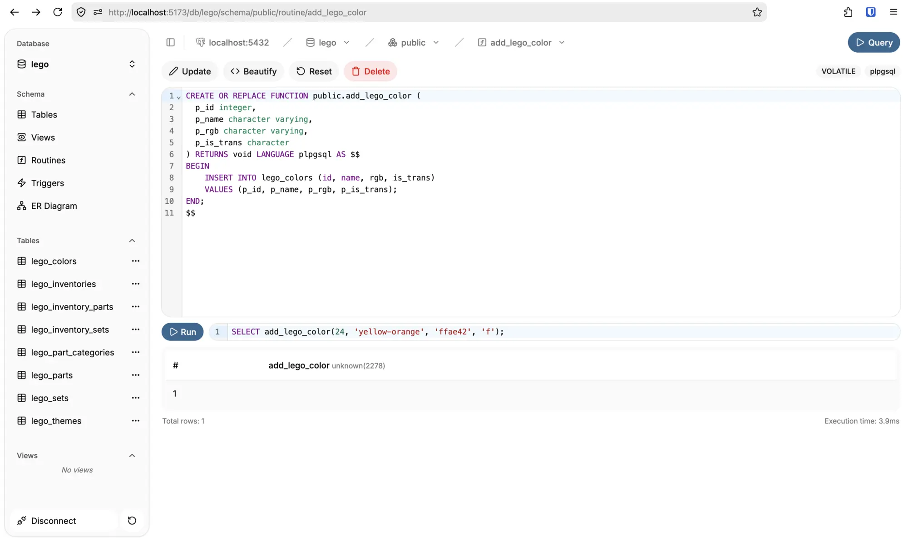

pgbrowser
The database client you've been missing
A web-based PostgreSQL client built for speed and simplicity. It compiles into a single binary with zero external dependencies and is packaged as a docker container.



Deploy locally with
docker run -p 3000:3000 ghcr.io/arnovda1/pgbrowser:latest
Database navigation
Effortlessly browse databases, schemas, tables, views, and inspect underlying table structures or indexes.
Powerful query editor
Run custom SQL with a CodeMirror 6 editor equipped with syntax highlighting and smart JSON formatting.
Logic & schema metrics
List and inspect deep details for functions or triggers, alongside real-time schema and table size metrics.
Lightweight stack
Powered by Svelte 5, Bun, Tailwind, and Postgres.js for a blazing fast, modern developer experience.